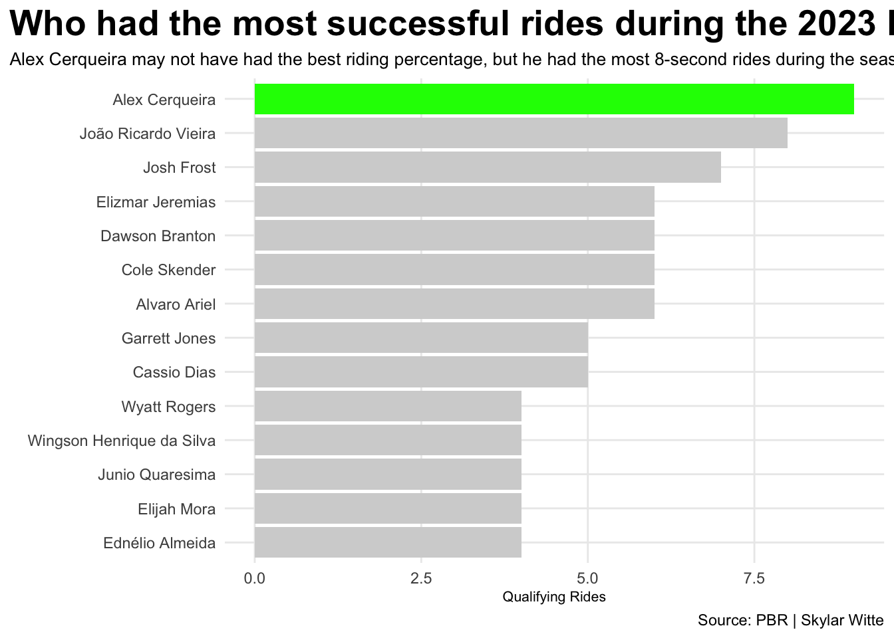

Rows: 357 Columns: 16
── Column specification ────────────────────────────────────────────────────────
Delimiter: ","
chr (1): Rider
dbl (15): Points, Points Back, Events, Outs, Rides, Buckoffs, prop.Ridden, A...
ℹ Use `spec()` to retrieve the full column specification for this data.
ℹ Specify the column types or set `show_col_types = FALSE` to quiet this message.
Code
rider |>select(Rider, prop.Ridden) |>gt() |>cols_label(prop.Ridden ="Ride Percentage" ) |>tab_header(title ="Who had the best riding percentage of the 2023 season?",subtitle ="Josh Frost was miles ahead of all other riders with a perfect riding percentage, while Elizmar Jeremias had the worst riding percentage of 30." ) |>tab_style(style =cell_text(color ="black", weight ="bold", align ="left"),locations =cells_title("title") ) |>tab_style(style =cell_text(color ="black", align ="left"),locations =cells_title("subtitle") ) |>tab_source_note(source_note =md("**By:** Skylar Witte | **Source:** SCORE Sports Data Repository: Professional Bull Riding Analysis") ) |>tab_style(locations =cells_column_labels(columns =everything()),style =list(cell_borders(sides ="bottom", weight =px(3)),cell_text(weight ="bold", size=12) ) ) |>opt_row_striping() |>opt_table_lines("none") |>tab_style(style =list(cell_fill(color ="green"),cell_text(color ="black") ),locations =cells_body(rows = Rider =="Josh Frost") ) |>tab_style(style =list(cell_fill(color ="red"),cell_text(color ="black") ),locations =cells_body(rows = Rider =="Elizmar Jeremias") )
Who had the best riding percentage of the 2023 season?
Josh Frost was miles ahead of all other riders with a perfect riding percentage, while Elizmar Jeremias had the worst riding percentage of 30.
Rider
Ride Percentage
Josh Frost
100.00
Alex Cerqueira
60.00
João Ricardo Vieira
57.14
Alvaro Ariel
33.33
Ednélio Almeida
66.67
Cassio Dias
38.46
Dawson Branton
50.00
Elizmar Jeremias
30.00
Garrett Jones
41.67
Wingson Henrique da Silva
50.00
Wyatt Rogers
50.00
Elijah Mora
40.00
Cole Skender
60.00
Junio Quaresima
44.44
By: Skylar Witte | Source: SCORE Sports Data Repository: Professional Bull Riding Analysis
Here’s more of the story.
Code
alex <- rider |>filter(Rider%in%c("Alex Cerqueira"))ggplot() +geom_bar(data=rider, aes (x=reorder(Rider, Rides), weight=Rides), fill="lightgrey") +geom_bar(data=alex, aes (x=reorder(Rider, Rides), weight= Rides), fill="green") +coord_flip() +labs(x="", y="Qualifying Rides", title="Who had the most successful rides during the 2023 PBR season.", subtitle="Alex Cerqueira may not have had the best riding percentage, but he had the most 8-second rides during the season.", caption="Source: PBR | Skylar Witte" ) +theme_minimal() +theme(plot.title.position ="plot",plot.title =element_text(size =20, face ="bold"),plot.subtitle =element_text(size=10), axis.title =element_text(size =8), panel.grid.minor =element_blank(),)

Here’s more of the story.
Code
josh <- rider |>filter(Rider%in%c("Josh Frost"))ggplot() +geom_point(data=rider, aes(x=prop.Ridden, y=`Avg Ride Score`, size=Rides),color="grey",alpha = .6) +geom_point(data=josh, aes(x=prop.Ridden, y=`Avg Ride Score`, size=Rides),color="green") +geom_text_repel(data=rider, aes(x=prop.Ridden, y=`Avg Ride Score`, label=Rider) ) +labs(x="Ride Success Percentage", y="Average Ride Score", title="PBR 2023 riders ranked by consistency and ride quality.", subtitle="Josh Frost stands out as the season's top rider with perfect ride consistency, strong average scores, and a high number of qualified rides.", caption="Source: PBR | Skylar Witte" )